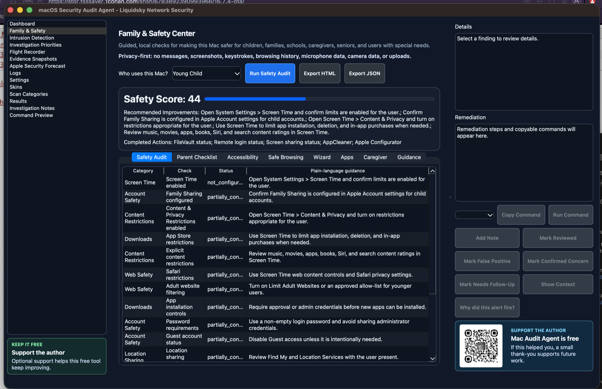

Family & Safety Center
Guided local Mac safety checks for families and schools.
Review Screen Time, privacy, content restrictions, safer settings, and caregiver-friendly guidance without inspecting private content.

Family & Safety Center
Review Screen Time, privacy, content restrictions, safer settings, and caregiver-friendly guidance without inspecting private content.
